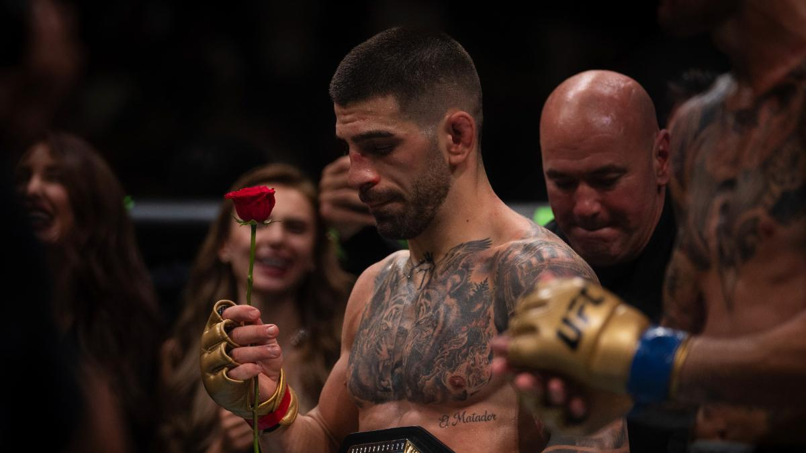

Todos los knockouts de Ilia topuria.
El peleador español Ilia Topuria ha destacado en la UFC por su impresionante habilidad para finalizar a sus oponentes. Con su estilo agresivo y preciso, ha acumulado una serie de knockouts que lo han consolidado como uno de los prospectos más emocionantes en la división de peso pluma.
Ilia Topuria: El momento emotivo con la rosa en el octágono
Tras una victoria trascendental, Ilia Topuria se arrodilla en el octágono y levanta una rosa, un gesto que se ha vuelto icónico para sus fanáticos. Este momento, lleno de simbolismo y emoción, capturó la atención de todos los presentes y dejó en claro el profundo vínculo del peleador con su tierra natal y su gente. La imagen de Topuria sosteniendo la rosa se ha convertido en un símbolo de perseverancia y conexión con sus raíces.